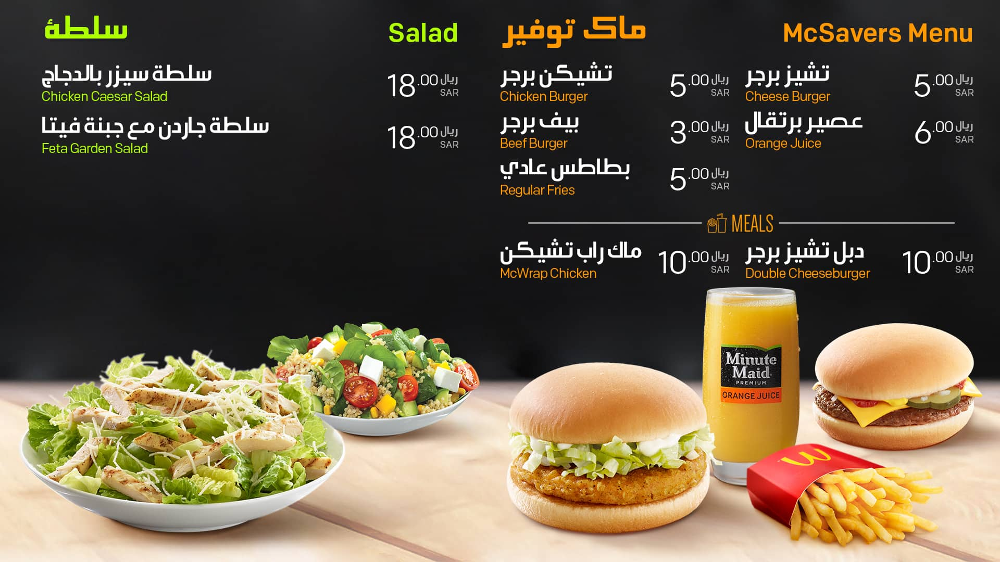
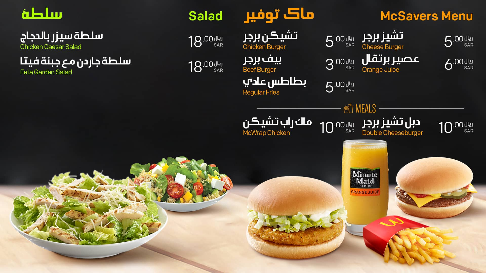
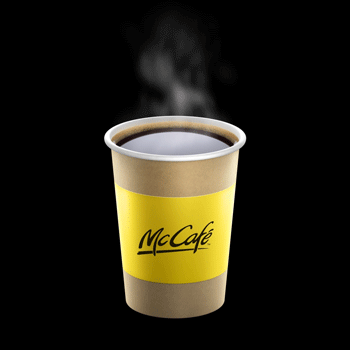
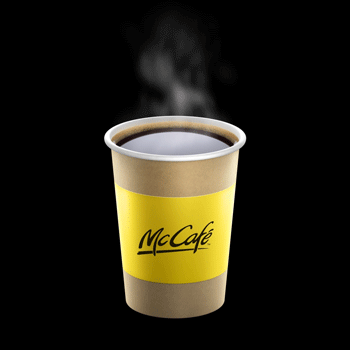

Revamping the
customer experience
Company / Client
Mcdonald's Saudi Araiba
Work areas
Digital Design
UI Design
Animation
Creating indoor designs
The design style was chosen in line with the global guideline and two different themes were made to represent different times of the day.

Breakfast menu
The breakfast menus were set on a light background to represent the bright sun and light menus in the morning.
Lunch & Dinner Menu
On the other hand, the lunch and dinner menus were set on a dark background to show a strong contrast from the breakfast. With this contrast, customers can better recognise the different menu offerings from the breakfast menus.
 

Adding animation
One of the most powerful features of digital content was creating animation. A set of subtle
but realistic animations was added to the menu in order to make it look more interesting and fun.
 


Creating drive-thru designs
Given the nature of drive-thru and customer behaviour, we decided to strip out non-core items and only show core items that could generate better sales. With more negative space and bigger images, it improved the readability of the menu and of course it looked much better.